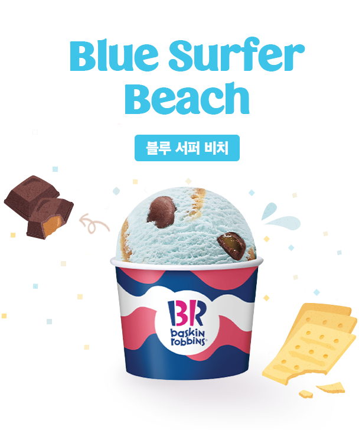
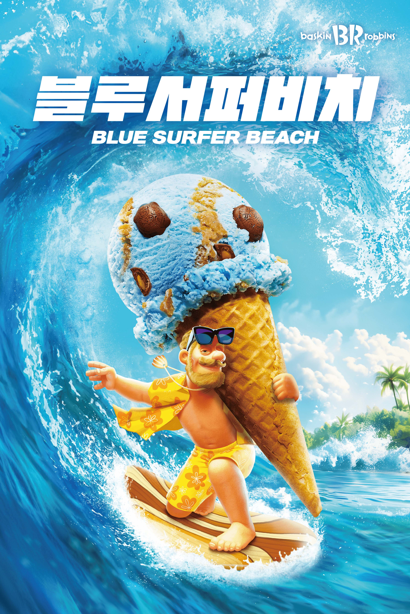
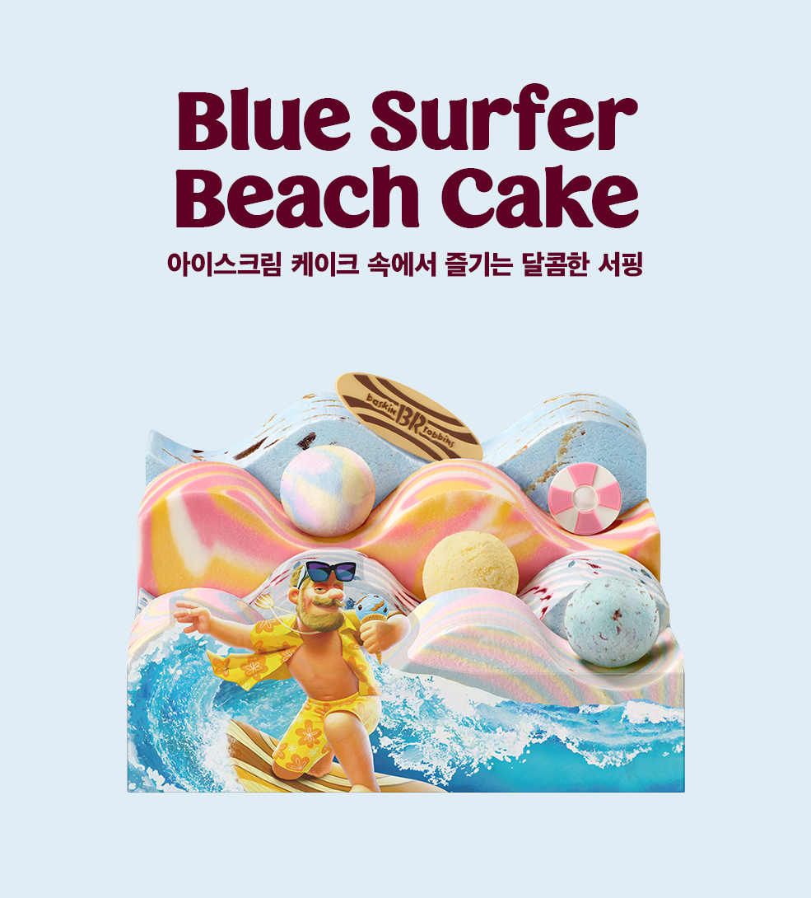
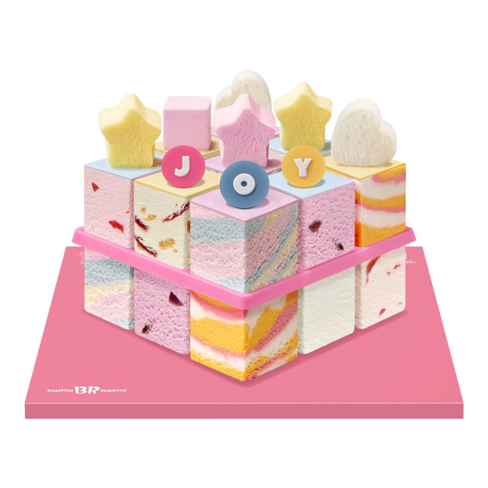
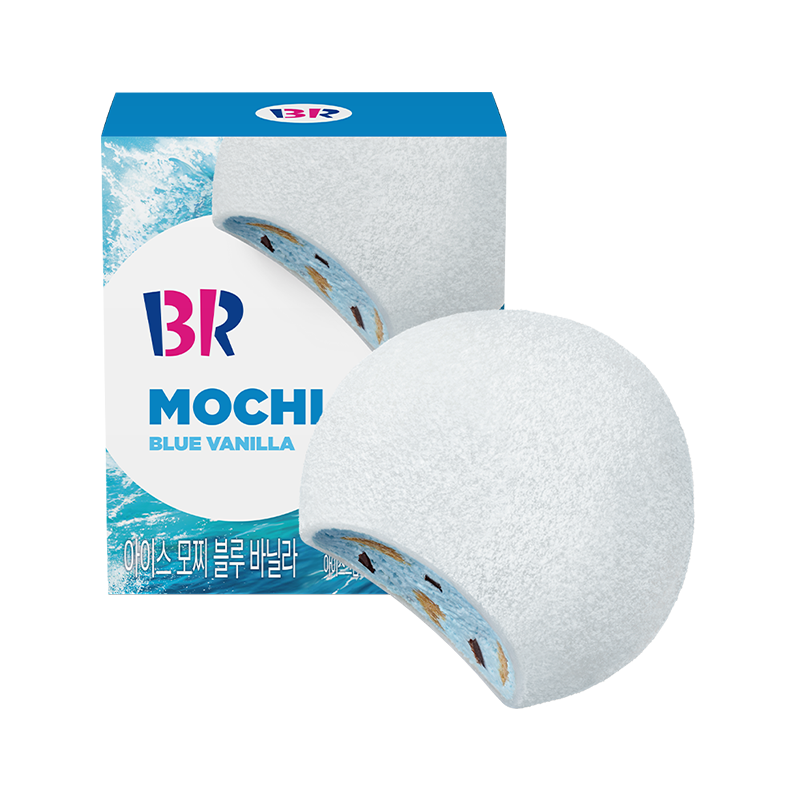

베스킨라빈스(Baskin-Robbins)는 1945년 캘리포니아 글렌데일에서 버트 배스킨(Burt Baskin)과 어브 로빈스(Irv Robbins)가 설립한 아이스크림
전문점입니다. 이 브랜드는 아이스크림을 더욱 재미있고 다양한 방식으로 경험할 수 있도록 하는 것을 목표로 하고 있습니다.
베스킨라빈스의 슬로건은"아이스크림을 파는 것이 아니라 즐거움을 파는 것이다"라는 의미를 담고있습니다. 앞으로도 베스킨라빈스는 프리미엄 아이스크림, 음료, 디져트,케이크 등,
획기적인
메뉴로 전세계 사람들에게 행복을 주는 브랜드의 길을 걸어 나갈 것 입니다.
베스킨라빈스(Baskin-Robbins)는 1945년에 미국에서 설립된 세계 최대의 아이스크림 체인점입니다. 이 브랜드는 "31가지 맛의 아이스크림"이라는 상징적인 슬로건을 통해
매일 다른 맛을 경험할 수 있도록 다양한 아이스크림을 제공하여 고객의 일상에 색다른 즐거움을 선사합니다. 혁신적이고 창의적인 맛을 지속적으로 개발하며, 고객의 만족과 행복을
최우선으로 생각합니다. 현재 50여 개국에서 수천 개의 매장을 운영하고 있으며, 품질, 다양성, 그리고 즐거움을 핵심 가치로 삼아 전 세계적으로 사랑받고 있습니다.
베스킨라빈스는아이스크림을 통해 사람들에게 행복과 즐거움을 전하는 것을 목표로 하고 있으며, 언제나 새로운 맛과 경험을 제공하기 위해 끊임없이 노력하고 있습니다.
Taste of the Month
7월 이달의 맛
블루 서퍼 비치(Blue Surfer Beach)
블루 솔티 바닐라 아이스크림에 그라함 쿠키, 단짠 매력의 거북이 모양 초콜릿이 쏘옥!

한입에 푸른 바다가 쏘옥!

올 여름 특별한 단짠 매력의 아이스크림

아이스크림 케이크 속에서 즐기는 달콤한 서핑
MENU
We make people happy
Ice Cream
한 입에 물면 달콤하게 사르르 녹는 아이스크림.
당신이 어떤 기분이든 그 아이스크림을 따라 당신의 기분은 아마 달콤해졌을 거예요.

Ice Cream Cake
축하하고 싶은 날에도, 위로가 필요한 날에도, 그 모든 순간 함께 할 아이스크림 케이크.
달콤한 아이스크림 케이크로 당신의 특별한 날을 더욱더 특별하게 만들어드릴게요.

Dessert
아이스크림을 더욱 맛있고 특별하게 즐길 수 있는 배스킨라빈스의 아이스 디저트!
쫀득한 모찌부터 달콤한 마카롱까지 다양한 디저트를 만나보세요.